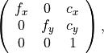
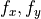
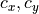

Camera¶
When we know the 3D position of a point in the world we can easily compute where we would see it in a camera image with the pinhole camera model. However, we have to know some parameters of the camera:
camera pose
focal length

sensor width and height
image width and height

Note that light passes through a pinhole in a real pinhole camera before it will be measured from the sensor so that pixels will be mirrored in the x-y plane. The sensor that we show here actually corresponds to the virtual image plane.
The following example shows how a grid is projected on an image.
"""
================
Camera Transform
================
We can see the camera frame and the world frame. There is a grid of points from
which we know the world coordinates. If we know the location and orientation of
the camera in the world, we can easily compute the location of the points on
the image.
"""
import numpy as np
import matplotlib.pyplot as plt
from pytransform3d.plot_utils import make_3d_axis
from pytransform3d.rotations import active_matrix_from_intrinsic_euler_xyz
from pytransform3d.transformations import transform_from, plot_transform
from pytransform3d.camera import make_world_grid, world2image, plot_camera
cam2world = transform_from(
active_matrix_from_intrinsic_euler_xyz([-np.pi + 1, -0.1, 0.3]),
[0.2, -1, 0.5])
focal_length = 0.0036
sensor_size = (0.00367, 0.00274)
image_size = (640, 480)
intrinsic_camera_matrix = np.array([
[focal_length, 0, sensor_size[0] / 2],
[0, focal_length, sensor_size[1] / 2],
[0, 0, 1]
])
world_grid = make_world_grid(n_points_per_line=101)
image_grid = world2image(world_grid, cam2world, sensor_size, image_size,
focal_length, kappa=0.4)
plt.figure(figsize=(12, 5))
ax = make_3d_axis(1, 121, unit="m")
ax.view_init(elev=30, azim=-70)
plot_transform(ax)
plot_transform(ax, A2B=cam2world, s=0.3, name="Camera")
plot_camera(ax, intrinsic_camera_matrix, cam2world,
sensor_size=sensor_size, virtual_image_distance=0.5)
ax.set_title("Camera and world frames")
ax.scatter(
world_grid[:, 0], world_grid[:, 1], world_grid[:, 2], s=1, alpha=0.2)
ax.scatter(world_grid[-1, 0], world_grid[-1, 1], world_grid[-1, 2], color="r")
ax.view_init(elev=25, azim=-130)
ax = plt.subplot(122, aspect="equal")
ax.set_title("Camera image")
ax.set_xlim(0, image_size[0])
ax.set_ylim(0, image_size[1])
ax.scatter(image_grid[:, 0], -(image_grid[:, 1] - image_size[1]))
ax.scatter(image_grid[-1, 0], -(image_grid[-1, 1] - image_size[1]), color="r")
plt.show()
Extrinsic and intrinsic camera parameters can be visualized in the following way. The extrinsic camera parameters are fully determined by a transform from world coordinates to camera coordinates or by the pose of the camera in the world. In this illustration, the point indicates the camera center / center of projection, which is the position component of the pose. The orientation determines the direction to and orientation of the virtual image plane. The arrow at the top of the virtual image plane shows the up direction of the image.
The field of view is determined from the intrinsic camera parameters. These are given by a matrix

where  are focal lengths and  is the position of the camera center. Together with the image size we can determine the field of view. Values of the intrinsic camera matrix and the image size can be given in pixels or meters to generate the following visualization.
"""
===========================
Camera Representation in 3D
===========================
This visualization is inspired by Blender's camera visualization. It will
show the camera center, a virtual image plane at a desired distance to the
camera center, and the top direction of the virtual image plane.
"""
import numpy as np
import matplotlib.pyplot as plt
import pytransform3d.camera as pc
import pytransform3d.transformations as pt
cam2world = pt.transform_from_pq([0, 0, 0, np.sqrt(0.5), -np.sqrt(0.5), 0, 0])
# default parameters of a camera in Blender
sensor_size = np.array([0.036, 0.024])
intrinsic_matrix = np.array([
[0.05, 0, sensor_size[0] / 2.0],
[0, 0.05, sensor_size[1] / 2.0],
[0, 0, 1]
])
virtual_image_distance = 1
ax = pt.plot_transform(A2B=cam2world, s=0.2)
pc.plot_camera(
ax, cam2world=cam2world, M=intrinsic_matrix, sensor_size=sensor_size,
virtual_image_distance=virtual_image_distance)
plt.show()
You can use this to display a trajectory of camera poses.
"""
=================
Camera Trajectory
=================
The following illustration shows a camera's trajectory that has has been
estimated from odometry. This specific trajectory has been used to reconstruct
a colored mesh from a depth camera and an RGB camera.
"""
import os
import numpy as np
import matplotlib.pyplot as plt
import pytransform3d.transformations as pt
import pytransform3d.trajectories as ptr
import pytransform3d.rotations as pr
import pytransform3d.camera as pc
from cycler import cycle
BASE_DIR = "test/test_data/"
data_dir = BASE_DIR
search_path = "."
while (not os.path.exists(data_dir) and
os.path.dirname(search_path) != "pytransform3d"):
search_path = os.path.join(search_path, "..")
data_dir = os.path.join(search_path, BASE_DIR)
intrinsic_matrix = np.loadtxt(os.path.join(
data_dir, "reconstruction_camera_matrix.csv"), delimiter=",")
P = np.loadtxt(os.path.join(data_dir, "reconstruction_odometry.csv"),
delimiter=",", skiprows=1)
for t in range(len(P)):
P[t, 3:] = pr.quaternion_wxyz_from_xyzw(P[t, 3:])
cam2world_trajectory = ptr.transforms_from_pqs(P)
plt.figure(figsize=(5, 5))
ax = pt.plot_transform(s=0.3)
ax = ptr.plot_trajectory(ax, P=P, s=0.1, n_frames=10)
image_size = np.array([1920, 1440])
key_frames_indices = np.linspace(0, len(P) - 1, 10, dtype=int)
colors = cycle("rgb")
for i, c in zip(key_frames_indices, colors):
pc.plot_camera(ax, intrinsic_matrix, cam2world_trajectory[i],
sensor_size=image_size, virtual_image_distance=0.2, c=c)
pos_min = np.min(P[:, :3], axis=0)
pos_max = np.max(P[:, :3], axis=0)
center = (pos_max + pos_min) / 2.0
max_half_extent = max(pos_max - pos_min) / 2.0
ax.set_xlim((center[0] - max_half_extent, center[0] + max_half_extent))
ax.set_ylim((center[1] - max_half_extent, center[1] + max_half_extent))
ax.set_zlim((center[2] - max_half_extent, center[2] + max_half_extent))
ax.view_init(azim=110, elev=40)
plt.show()